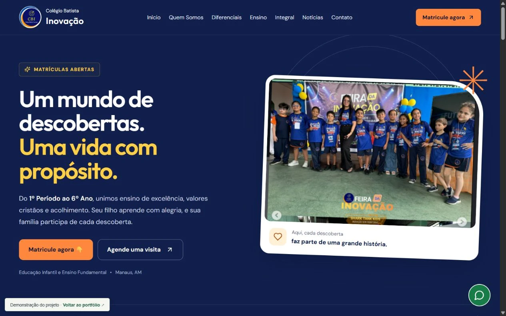

Página responsiva
Composição adaptada a diferentes tamanhos de tela e menu móvel.
02 / DESENVOLVIMENTO WEB
Página de apresentação do Colégio Batista Inovação, desenvolvida em React.

A página reúne informações sobre a escola, as etapas de ensino e as atividades dos alunos. Os botões de contato levam ao WhatsApp para consultar matrículas ou agendar uma visita.
Usei React e CSS para montar as seções da página. Separei o conteúdo em arquivos de dados e componentes, incluindo a apresentação da escola, os diferenciais, o ensino e a galeria de atividades.
O site tem menu móvel, navegação entre seções e uma galeria com imagens ampliadas. Também inclui navegação por teclado e controle de foco ao abrir e fechar a galeria.
POR DENTRO DO PROJETO
Composição adaptada a diferentes tamanhos de tela e menu móvel.
Proposta da escola, diferenciais, etapas de ensino e modalidades de atendimento.
Chamadas para informações de matrícula e agendamento de visita via WhatsApp.
Registros das atividades escolares com visualização ampliada em diálogo.
Link para pular ao conteúdo, estados do menu e gerenciamento de foco na galeria.
Componentes React por seção, conteúdo em arquivos de dados e build com Vite.
Abra a demonstração para navegar pelas seções e conhecer a interface completa.